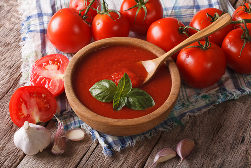
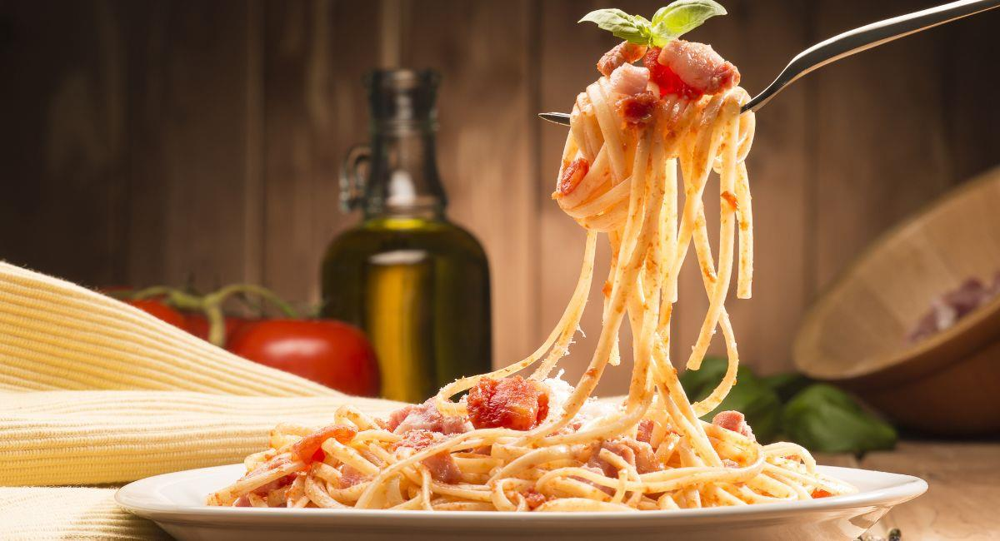

Tomate
El tomate es un ingrediente fundamental en la cocina italiana. Es la base de muchas salsas, incluyendo la famosa salsa de tomate utilizada en la pizza y la pasta.
Explora nuestro contenido increíble
El tomate es un ingrediente fundamental en la cocina italiana. Es la base de muchas salsas, incluyendo la famosa salsa de tomate utilizada en la pizza y la pasta.
La albahaca es una hierba aromática ampliamente utilizada en la cocina italiana. Su aroma y sabor únicos añaden un toque fresco a muchos platos.
El aceite de oliva es uno de los pilares de la cocina italiana. Se utiliza en una variedad de platos, desde ensaladas hasta pastas y pizzas. Su sabor y aroma únicos son esenciales para muchas recetas tradicionales.